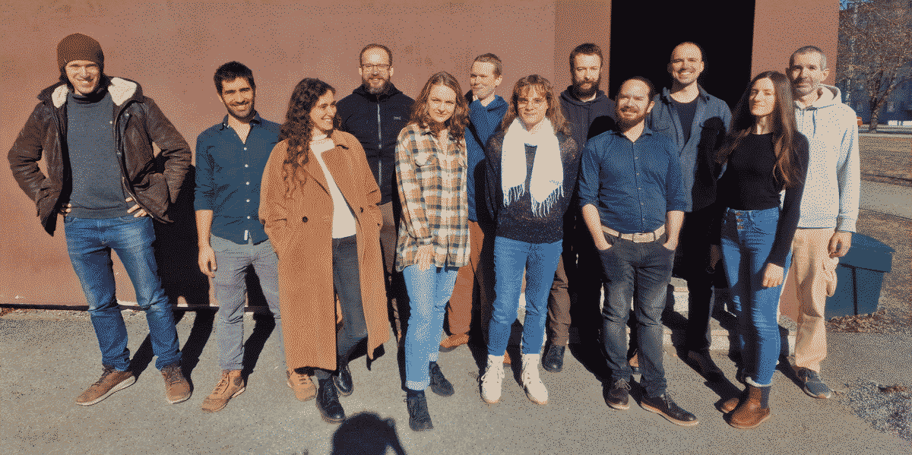

Compositional Systems and Methods Group at TalTech

Figure 1: From left to right: Amar Hadzihasanovic, Mario Román, Elena Di Lavore, Paweł Sobocinski, Ekaterina Zhuchko, Chad Nester, Clémence Chanavat, Matt Earnshaw, Fosco Loregian, Nathan Haydon, Diana Kessler, Edward Morehouse
We are supported by the ESF funded Estonian IT Academy research measure (project 2014-2020.4.05.19-0001).
Current and Upcoming Events
Death?
Current and Upcoming Visitors
Courses
Functional Programming (ITI0212)
Introduction to Category Theory and its Applications (ITI9200)
Publications
G. Boccali, A. Laretto, F. Loregian, S. Luneia. Completeness for Categories of Generalized Automata. CALCO 2023.
E. Di Lavore, A. Gianola, M. Román, N. Sabadini, P. Sobociński. Span(Graph): a Canonical Feedback Algebra of Open Transition Systems. Software and Systems Modelling.
E. Di Lavore, M. Román. Evidential Decision Theory via Partial Markov Categories. LICS 2023.
E Di Lavore, P. Sobociński. Monoidal Width: Capturing Rank Width. ACT 2022.
I. Di Liberti, F. Loregian. Accessibility and Presentability in 2-categories. Journal of Pure and Applied Algebra.
F. Genovese, F. Loregian, D. Palombi. Escrows are Optics. Journal of Financial Technology.
F. Genovese, F. Loregian, C. Puca. Fibrational Linguistics: Language Acquisition. ACT 2022.
A. Hadzihasanovic, D. Kessler. Higher-Dimensional Subdiagram Matching. LICS 2023.
A. Hadzihasanovic, D. Kessler. Data Structure for Topologically Sound Higher-Dimensional Diagram Rewriting. ACT 2022.
F. Loregian, T. Trimble. Differential 2-Rigs. ACT 2022.
C. Nester. Concurrent Process Histories and Resource Transducers. Logical Methods in Computer Science.
G. Boisseau, C. Nester, M. Román. Cornering Optics. ACT 2022.
M. Román. Promonads and String Diagrams for Effectful Categories. ACT 2022.
G. Boisseau, P. Sobociński. String Digrammatic Electrical Circuit Theory. ACT 2021.
F. Bonchi, F. Gadducci, A. Kissinger, P. Sobociński, F. Zanasi. String Diagram Rewrite Theory 1: Rewriting with Frobenius Structure. Mathematical Structures in Computer Science.
F. Bonchi, F. Gadducci, A. Kissinger, P. Sobociński, F. Zanasi. String Diagram Rewrite Theory 2: Rewriting with Symmetric Monoidal Structure. Mathematical Structures in Computer Science.
F. Bonchi, F. Gadducci, A. Kissinger, P. Sobociński, F. Zanasi. String Diagram Rewrite Theory 3: Confluence with and without Frobenius. Mathematical Structures in Computer Science.
E. Di Lavore, G. De Felice, M. Román. Monoidal Streams for Dataflow Programming. LICS 2022.
M. Earnshaw, P. Sobociński. Regular Monoidal Languages. MFCS 2022.
F. Genovese, F. Loregian, D. Palombi. A Categorical Semantics for Bounded Petri Nets. ACT 2021.
F. Loregian, T. De Oliveira Santos. Coends of Higher Arity. Applied Categorical Structures.
C. Nester. Situated Transition Systems. ACT 2021.
J. Paixão, L. Rufino, P. Sobociński. High-Level Axioms for Graphical Linear Algebra. Science of Computer Programming.
F. Bonchi, A Di Giorgio, P. Sobociński. Diagrammatic Polyhedral Algebra. FSTTCS 2021.
F. Bonchi, R. Piedeleu, P. Sobociński, F. Zanasi. Bialgebrais Foundations for the Operational Semantics of String Diagrams. Information and Computation.
F. Bonchi, A. Santamaria, J. Seeber, P. Sobociński. On Doctrines and Cartesian Bicategories. CALCO 2021.
F. Bonchi, P. Sobociński, F. Zanasi. A Survey of Compositional Signal Flow Theory. Book Chapter.
G. De Felice, E. Di Lavore, M. Román, A. Tuomi. Functorial Language Games for Question Answering. ACT 2020.
E. Di Lavore, A. Gianola, M. Román, N. Sabadini, P. Sobociński. A Canonical Algebra of Open Transition Systems. FACS 2021.
E. Di Lavore, J. Hedges, P. Sobociński. Compositional Modelling of Network Games. CSL 2021.
I. Di Liberti, F. Loregian, C. Nester, P. Sobociński. Functorial Semantics for Partial Theories. POPL 2021.
F. Genovese, J. Herold, F. Loregian, D. Palombi. A Categorical Semantics for Hierarchical Petri Nets. GCM 2021.
F. Genovese, F. Loregian, D. Palombi. Nets with Mana: a Framework for Chemical Reaction Modelling. ICGT 2021.
N. Haydon, A.-V. Pietarinen. Residuation in Peirce's Existential Graphs. Diagrams 2021.
A. Hadzihasanovic. The Smash Product of Monoidal Theories. LICS 2021.
F. Loregian. (Co)end calculus. Book.
C. Nester. A Foundation for Ledger Structures. Tokenomics 2020.
C. Nester. A Variety Theorem for Relational Universal Algebra. RAMICS 2021.
C. Nester. The Structure of Concurrent Process Histories. COORDINATION 2021.
M. Román. Open Diagrams via Coend Calculus. ACT 2020.
N. Behr, P. Sobociński. Rule Algebras for Adhesive Categories. Logical Methods in Computer Science.
F. Bonchi, R. Piedeleu, P. Sobociński, F. Zanasi. Contextual Equivalence for Signal Flow Graphs. FOSSACS 2020.
N. Haydon, P. Sobociński. Compositional Diagrammatic First-Order Logic. Diagrams 2020.
J. Paixão, P. Sobociński. Calculational Proofs in Relational Graphical Linear Algebra. SBMF 2020.